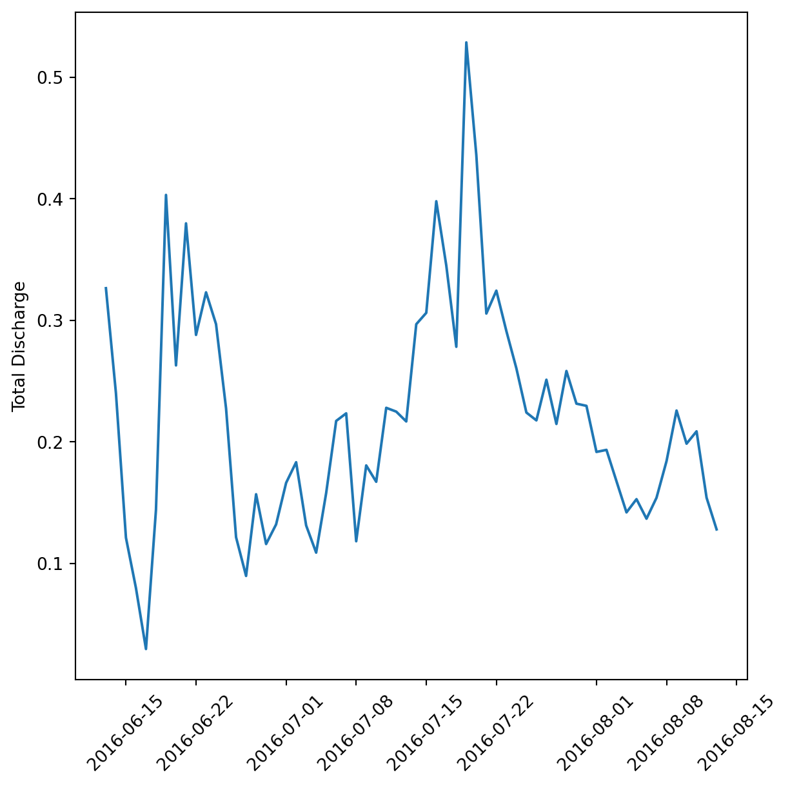
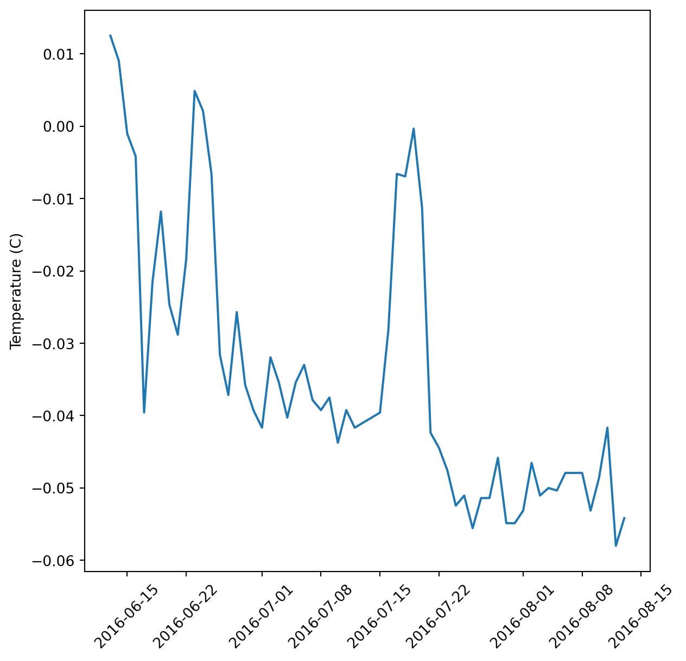

x = 4
print(x)4We’ve chosen to use VS Code in this training, in part, because it has great support for developing on remote machines. Hopefully, your VS Code setup went easily, and you were able to connect to our server included-crab. Once connected, the VS Code interface looks just like you were working locally, and connection to the server is seamless.
Other aspects of VS Code that we like: it supports all languages thanks to the extensive free extension library, it has built in version control integration, and it is highly flexible/configurable.
We will also be working quite a bit in Jupyter notebooks in this course. Notebooks are great ways to interleave rich text (markdown formatted text, equations, images, links) and code in a way that a ‘literate analysis’ is generated. Although Jupyter notebooks are not subsitutes for python scripts, they can be great communication tools, and can also be convenient for code development.
To get set up for the course, let’s connect to the server again. If you were able to work through the setup for the lesson without difficulty, follow these steps to connect:
included-crabAlternatively, you may see a popup window that says “Cannot reconnect. Please reload the window”. Choose the blue Reload Window button and enter your password, if prompted.
To open the scalable-computing-examples workspace, select File > Open Workspace from File. Then navigate to and select ~/scalable-computing-examples/scalable-computing-examples.code-workspace. If you cannot find the scalable-computing-examples directory, in a terminal you can use the ls command to list out the contents of your home directory and ensure that you have a clone of the respository. If not, follow the instructions in Exercise 3 in the Remote Computing session).
Once connected and in the workslace, use the pwd command in the terminal to make sure you’re in your project directory (/home/yourusername/scalable-computing-examples).

When you install a python library, let’s say pandas, via pip, unless you specify otherwise, pip will go out and grab the most recent version of the library, and install it somewhere on your system path (where, exactly, depends highly on how you install python originally, and other factors). That library is going to sit alongside every other python library you have ever installed (probably a lot of them) in your site-packages directory. This might work okay, until you start a new project, have no idea what version of pandas you had installed, realize that version conflicts with a new library that you need, and then instead of writing code you are spending days trying to untangle the sphaghetti mess of your python install, libraries and their versions. Sound familiar? Virtual environments help to solve this issue without making the all to common situation in the comic above even more complicated.
A virtual environment is a folder structure which creates a symlink (pointer) to all of the libraries that you specify into the folder. The three main components will be: the python distribution itself, its configuration, and a site-packages directory (where your libraries like pandas live). So the folder is a self contained directory of all the version-specific python software you need for your project.
Virtual environments are very helpful to create reproducible workflows, and we’ll talk more about this concept of reproducible environements later in the course. Perhaps most importantly though, virtual environments also help you maintain your sanity when python programming. Because they are just folders, you can create and delete new ones at will, without worrying about bungling your underlying python setup.
In this course, we are going to use virtualenv as our tool to create and manage virtual environments. Other virtual environment tools used commonly are conda and pipenv. One reason we like using virtualenv is there is an extension to it called virtualenvwrapper, which provides easy to remember wrappers around common virtualenv operations that make creating, activating, and deactivating a virtual environment very easy.
First we will create a .bash_profile file to create variables that point to the install locations of python and virtualenvwrapper. .bash_profile is just a text file that contains bash commands that are run every time you start up a new terminal. Although setting up this file is not required to use virtualenvwrapper, it is convenient because it allows you to set up some reasonable defaults to the commands (meaning less typing, overall), and it makes sure that the package is available every time you start a new terminal.
export VIRTUALENVWRAPPER_VIRTUAWORKON_HOME=$HOME/.virtualenvs
source /usr/share/virtualenvwrapper/virtualenvwrapper.shThe first line points virtualenvwrapper to the directory where your virtual environments will be stored. We point it to a hidden directory (.virtualenvs) in your home directory. The last line sources a bash script that ships with virtualenvwrapper, which makes all of virtualenvwrapper commands available in your terminal session.
.bash_profile.mkvirtualenv --versionIt should return some content that looks like this (with more output, potentially).
virtualenv 20.13.0+ds from /usr/lib/python3/dist-packages/virtualenv/__init__.pyNow we can create the virtual environment we will use for the course. In the terminal run:
mkvirtualenv -p python3.9 scompHere, we’ve specified explicitly which python version to use by using the -p flag, and the path to the python 3.9 installation on the server. After making a virtual environment, it will automatically be activated. You’ll see the name of the env you are working in on the left side of your terminal prompt in parentheses. To deactivate your environment (like if you want to work on a different project), just run deactivate. To activate it again, run:
workon scompYou can get a list of all available environments by just running:
workonNow let’s install the dependencies for this course into that environment. To install our libraries we’ll use pip. As of Python 3.4, pip is automatically included with your python installation. pip is a package manager for python, and you might have used it already to install common python libraries like pandas or numpy. pip goes out to PyPI, the Python Package Index, to download the code and put it in your site-packages directory. Note that on this shared server, your user directory will ahve a site-packages directory, in addition to one that our systems administrator manages as the root of the system.
pip install -r requirements.txtvirtualenvwrapper was already installed on the server we are working on. To install on your local computer, run:
pip3 install virtualenvwrapperAnd then follow the instructions as described above, making sure that you have the correct paths set when you edit your .bash_profile.
We’ll very briefly go over some basic python syntax and the base variable types. First, open a python script. From the File menu, select New File, type “python”, then save it as ‘python-intro.py’ in the top level of your directory.
In your file, assign a value to a variable using = and print the result.
x = 4
print(x)4To run this code in python we can:
python python-intro.py in the terminalIn that interactive window you can then run python code interactively, which is what we’ll use for the next bit of exploring data types.
There are 5 standard data types in python
We already saw a number type, here is a string:
str = 'Hello World!'
print(str)Hello World!Lists in python are very versatile, and are created using square brackets []. Items in a list can be of different data types.
list = [100, 50, -20, 'text']
print(list)[100, 50, -20, 'text']You can access items in a list by index using the square brackets. Note indexing starts with 0 in python. The slice operator enables you to easily access a portion of the list without needing to specify every index.
list[0] # print first element
list[1:3] # print 2nd until 4th elements
list[:2] # print first until the 3rd
list[2:] # print last elements from 3rd100[50, -20][100, 50][-20, 'text']The + and * operators work on lists by creating a new list using either concatenation (+) or repetition (*).
list2 = ['more', 'things']
list + list2
list * 3[100, 50, -20, 'text', 'more', 'things'][100, 50, -20, 'text', 100, 50, -20, 'text', 100, 50, -20, 'text']Tuples are similar to lists, except the values cannot be changed in place. They are constructed with parentheses.
tuple = ('a', 'b', 'c', 'd')
tuple[0]
tuple * 3
tuple + tuple'a'('a', 'b', 'c', 'd', 'a', 'b', 'c', 'd', 'a', 'b', 'c', 'd')('a', 'b', 'c', 'd', 'a', 'b', 'c', 'd')Observe the difference when we try to change the first value. It works for a list:
list[0] = 'new value'
list['new value', 50, -20, 'text']…and errors for a tuple.
tuple[0] = 'new value'TypeError: 'tuple' object does not support item assignmentDictionaries consist of key-value pairs, and are created using the syntax {key: value}. Keys are usually numbers or strings, and values can be any data type.
dict = {'name': ['Jeanette', 'Matt'],
'location': ['Tucson', 'Juneau']}
dict['name']
dict.keys()['Jeanette', 'Matt']dict_keys(['name', 'location'])To determine the type of an object, you can use the type() method.
type(list)
type(tuple)
type(dict)listtupledictTo create a new notebook, from the file menu select File > New File > Jupyter Notebook. Go ahead and save this notebook at the top level of your scalable-computing-examples directory.
At the top of your notebook, add a first level header using a single hash. Practice some markdown text by creating:
Use the Markdown cheat sheet if needed.
You can click the plus button below any chunk to add a chunk of either markdown or python.
In your first code chunk, lets load in some modules. We’ll use pandas, numpy, matplotlib.pyplot, requests, skimpy, and exists from os.path.
import pandas as pd
import numpy as np
import matplotlib.pyplot as plt
import urllib
import skimpy
import osA note on style: There are a few ways to construct import statements. The above code uses three of the most common:
import module
import module as m
from module import functionThe first way of importing will make the module a function comes from more explicitly clear, and is the simplest. However for very long module names, or ones that are used very frequently (like pandas, numpy, and matplotlib.plot), the code in the notebook will be more cluttered with constant calls to longer module names. So module.function() instead is written as m.function()
The second way of importing a module is a good style to use in cases where modules are used frequently, or have extremely long names. If you import every single module with a short name, however, you might have a hard time remembering which modules are named what, and it might be more confusing for others trying to read your code. Many of the most commonly used libraries for python data science have community-driven styling for how they are abbreviated in import statements, and these community norms are generally best followed.
Finally, the last way to import a single object from a module can be helpful if you only need that one piece from a larger module, but again, like the first case, results in less explicit code and therefore runs the risk of your or someone else misremembering the usage and source.
Create a new code chunk that will download the csv that we are going to use for this tutorial.
Create a variable called URL and assign it the link copied to your clipboard. Then use urllib.request.urlretrieve to download the file, and open to write it to disk, to a directory called data/. We’ll write this bundled in an if statement so that we only download the file if it doesn’t yet exist. First, we create the directory if it doesn’t exist:
if not os.path.exists ('data/'):
os.mkdir('data/')if not os.path.exists('data/discharge_timeseries.csv'):
url = 'https://arcticdata.io/metacat/d1/mn/v2/object/urn%3Auuid%3Ae248467d-e1f9-4a32-9e38-a9b4fb17cefb'
msg = urllib.request.urlretrieve(url, 'data/discharge_timeseries.csv')Now we can read in the data from the file.
df = pd.read_csv('data/discharge_timeseries.csv')
df.head()| Date | Total Pressure [m] | Air Pressure [m] | Stage [m] | Discharge [m3/s] | temperature [degrees C] | |
|---|---|---|---|---|---|---|
| 0 | 6/13/2016 0:00 | 9.816 | 9.609775 | 0.206225 | 0.083531 | -0.1 |
| 1 | 6/13/2016 0:05 | 9.810 | 9.609715 | 0.200285 | 0.077785 | -0.1 |
| 2 | 6/13/2016 0:10 | 9.804 | 9.609656 | 0.194344 | 0.072278 | -0.1 |
| 3 | 6/13/2016 0:15 | 9.800 | 9.609596 | 0.190404 | 0.068756 | -0.1 |
| 4 | 6/13/2016 0:20 | 9.793 | 9.609537 | 0.183463 | 0.062804 | -0.1 |
The column names are a bit messy so we can use clean_columns from skimpy to make them cleaner for programming very quickly. We can also use the skim function to get a quick summary of the data.
clean_df = skimpy.clean_columns(df)
skimpy.skim(clean_df)6 column names have been cleaned
╭──────────────────────────────────────────────── skimpy summary ─────────────────────────────────────────────────╮ │ Data Summary Data Types │ │ ┏━━━━━━━━━━━━━━━━━━━┳━━━━━━━━┓ ┏━━━━━━━━━━━━━┳━━━━━━━┓ │ │ ┃ dataframe ┃ Values ┃ ┃ Column Type ┃ Count ┃ │ │ ┡━━━━━━━━━━━━━━━━━━━╇━━━━━━━━┩ ┡━━━━━━━━━━━━━╇━━━━━━━┩ │ │ │ Number of rows │ 17856 │ │ float64 │ 5 │ │ │ │ Number of columns │ 6 │ │ string │ 1 │ │ │ └───────────────────┴────────┘ └─────────────┴───────┘ │ │ number │ │ ┏━━━━━━━━━━━━━━━━━━━━━━━━━━┳━━━━━┳━━━━━━━━━┳━━━━━━━━━━┳━━━━━━━━┳━━━━━━━━━━━┳━━━━━━━━┳━━━━━━━┳━━━━━━━┳━━━━━━━━┓ │ │ ┃ column_name ┃ NA ┃ NA % ┃ mean ┃ sd ┃ p0 ┃ p25 ┃ p75 ┃ p100 ┃ hist ┃ │ │ ┡━━━━━━━━━━━━━━━━━━━━━━━━━━╇━━━━━╇━━━━━━━━━╇━━━━━━━━━━╇━━━━━━━━╇━━━━━━━━━━━╇━━━━━━━━╇━━━━━━━╇━━━━━━━╇━━━━━━━━┩ │ │ │ total_pressure_m │ 0 │ 0 │ 9.9 │ 0.12 │ 9.6 │ 9.8 │ 10 │ 10 │ ▁▅█▇▅▂ │ │ │ │ air_pressure_m │ 0 │ 0 │ 9.6 │ 0.06 │ 9.5 │ 9.6 │ 9.7 │ 9.7 │ ▂▅▄▆█▃ │ │ │ │ stage_m │ 0 │ 0 │ 0.28 │ 0.12 │ 0.00056 │ 0.17 │ 0.37 │ 0.56 │ ▁█▇▇▆▁ │ │ │ │ discharge_m_3_s │ 0 │ 0 │ 0.22 │ 0.19 │ 4.7e-08 │ 0.055 │ 0.35 │ 0.96 │ █▄▃▁ │ │ │ │ temperature_degrees_ │ 8 │ 0.045 │ -0.034 │ 0.053 │ -0.1 │ -0.1 │ 0 │ 0.2 │ ▅█ │ │ │ └──────────────────────────┴─────┴─────────┴──────────┴────────┴───────────┴────────┴───────┴───────┴────────┘ │ │ string │ │ ┏━━━━━━━━━━━━━━━━━━━━━━━━━━━┳━━━━━━━━━┳━━━━━━━━━━━━┳━━━━━━━━━━━━━━━━━━━━━━━━━━━━━━┳━━━━━━━━━━━━━━━━━━━━━━━━━━┓ │ │ ┃ column_name ┃ NA ┃ NA % ┃ words per row ┃ total words ┃ │ │ ┡━━━━━━━━━━━━━━━━━━━━━━━━━━━╇━━━━━━━━━╇━━━━━━━━━━━━╇━━━━━━━━━━━━━━━━━━━━━━━━━━━━━━╇━━━━━━━━━━━━━━━━━━━━━━━━━━┩ │ │ │ date │ 0 │ 0 │ 2 │ 36000 │ │ │ └───────────────────────────┴─────────┴────────────┴──────────────────────────────┴──────────────────────────┘ │ ╰────────────────────────────────────────────────────── End ──────────────────────────────────────────────────────╯
We can see that the date column is classed as a string, and not a date, so let’s fix that.
clean_df['date'] = pd.to_datetime(clean_df['date'])
skimpy.skim(clean_df)╭──────────────────────────────────────────────── skimpy summary ─────────────────────────────────────────────────╮ │ Data Summary Data Types │ │ ┏━━━━━━━━━━━━━━━━━━━┳━━━━━━━━┓ ┏━━━━━━━━━━━━━┳━━━━━━━┓ │ │ ┃ dataframe ┃ Values ┃ ┃ Column Type ┃ Count ┃ │ │ ┡━━━━━━━━━━━━━━━━━━━╇━━━━━━━━┩ ┡━━━━━━━━━━━━━╇━━━━━━━┩ │ │ │ Number of rows │ 17856 │ │ float64 │ 5 │ │ │ │ Number of columns │ 6 │ │ datetime64 │ 1 │ │ │ └───────────────────┴────────┘ └─────────────┴───────┘ │ │ number │ │ ┏━━━━━━━━━━━━━━━━━━━━━━━━━━┳━━━━━┳━━━━━━━━━┳━━━━━━━━━━┳━━━━━━━━┳━━━━━━━━━━━┳━━━━━━━━┳━━━━━━━┳━━━━━━━┳━━━━━━━━┓ │ │ ┃ column_name ┃ NA ┃ NA % ┃ mean ┃ sd ┃ p0 ┃ p25 ┃ p75 ┃ p100 ┃ hist ┃ │ │ ┡━━━━━━━━━━━━━━━━━━━━━━━━━━╇━━━━━╇━━━━━━━━━╇━━━━━━━━━━╇━━━━━━━━╇━━━━━━━━━━━╇━━━━━━━━╇━━━━━━━╇━━━━━━━╇━━━━━━━━┩ │ │ │ total_pressure_m │ 0 │ 0 │ 9.9 │ 0.12 │ 9.6 │ 9.8 │ 10 │ 10 │ ▁▅█▇▅▂ │ │ │ │ air_pressure_m │ 0 │ 0 │ 9.6 │ 0.06 │ 9.5 │ 9.6 │ 9.7 │ 9.7 │ ▂▅▄▆█▃ │ │ │ │ stage_m │ 0 │ 0 │ 0.28 │ 0.12 │ 0.00056 │ 0.17 │ 0.37 │ 0.56 │ ▁█▇▇▆▁ │ │ │ │ discharge_m_3_s │ 0 │ 0 │ 0.22 │ 0.19 │ 4.7e-08 │ 0.055 │ 0.35 │ 0.96 │ █▄▃▁ │ │ │ │ temperature_degrees_ │ 8 │ 0.045 │ -0.034 │ 0.053 │ -0.1 │ -0.1 │ 0 │ 0.2 │ ▅█ │ │ │ └──────────────────────────┴─────┴─────────┴──────────┴────────┴───────────┴────────┴───────┴───────┴────────┘ │ │ datetime │ │ ┏━━━━━━━━━━━━━━━━━━━━┳━━━━━━━┳━━━━━━━━━━┳━━━━━━━━━━━━━━━━━━┳━━━━━━━━━━━━━━━━━━━━━━━━━━━━━━━━┳━━━━━━━━━━━━━━━━┓ │ │ ┃ column_name ┃ NA ┃ NA % ┃ first ┃ last ┃ frequency ┃ │ │ ┡━━━━━━━━━━━━━━━━━━━━╇━━━━━━━╇━━━━━━━━━━╇━━━━━━━━━━━━━━━━━━╇━━━━━━━━━━━━━━━━━━━━━━━━━━━━━━━━╇━━━━━━━━━━━━━━━━┩ │ │ │ date │ 0 │ 0 │ 2016-06-13 │ 2016-08-13 23:55:00 │ 5T │ │ │ └────────────────────┴───────┴──────────┴──────────────────┴────────────────────────────────┴────────────────┘ │ ╰────────────────────────────────────────────────────── End ──────────────────────────────────────────────────────╯
If we wanted to calculate the daily mean flow (as opposed to the flow every 5 minutes), we need to:
First we should probably rename our existing date/time column to prevent from getting confused.
clean_df = clean_df.rename(columns = {'date': 'datetime'})Now create the new date column
clean_df['date'] = clean_df['datetime'].dt.dateFinally, we use group by to split the data into groups according to the date. We can then apply the mean method to calculate the mean value across all of the columns. Note that there are other methods you can use to calculate different statistics across different columns (eg: clean_df.groupby('date').agg({'discharge_m_3_s': 'max'})).
daily_flow = clean_df.groupby('date', as_index = False).mean(numeric_only = True)var = 'discharge_m_3_s'
var_labs = {'discharge_m_3_s': 'Total Discharge'}
fig, ax = plt.subplots(figsize=(7, 7))
plt.plot(daily_flow['date'], daily_flow[var])
plt.xticks(rotation = 45)
ax.set_ylabel(var_labs.get('discharge_m_3_s'))(array([16967., 16974., 16983., 16990., 16997., 17004., 17014., 17021.,
17028.]),
[Text(0, 0, ''),
Text(0, 0, ''),
Text(0, 0, ''),
Text(0, 0, ''),
Text(0, 0, ''),
Text(0, 0, ''),
Text(0, 0, ''),
Text(0, 0, ''),
Text(0, 0, '')])Text(0, 0.5, 'Total Discharge')
The plot we made above is great, but what if we wanted to make it for each variable? We could copy paste it and replace some things, but this violates a core tenet of programming: Don’t Repeat Yourself! Instead, we’ll create a function called myplot that accepts the data frame and variable as arguments.
myplot.pyimport matplotlib.pyplot as plt
def myplot(df, var):
var_labs = {'discharge_m_3_s': 'Total Discharge (m^3/s)',
'total_pressure_m': 'Total Pressure (m)',
'air_pressure_m': 'Air Pressure (m)',
'stage_m': 'Stage (m)',
'temperature_degrees_c': 'Temperature (C)'}
fig, ax = plt.subplots(figsize=(7, 7))
plt.plot(df['date'], df[var])
plt.xticks(rotation = 45)
ax.set_ylabel(var_labs.get(var))from myplot import myplot)myplot(daily_flow, 'temperature_degrees_c')
We’ll have more on functions in the software design sections.
In this lesson we learned all about virtual environments, how to use them, and why. We got our environments set up for the course, did a brief python syntax review, and then jumped into Jupyter notebooks, pandas, and writing functions.